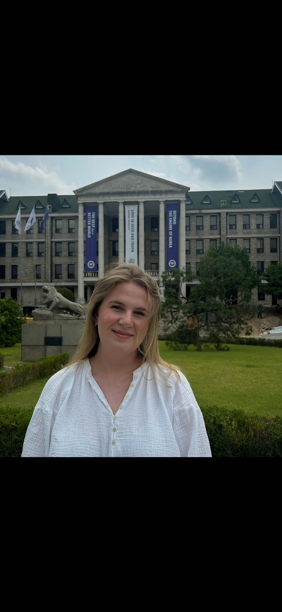
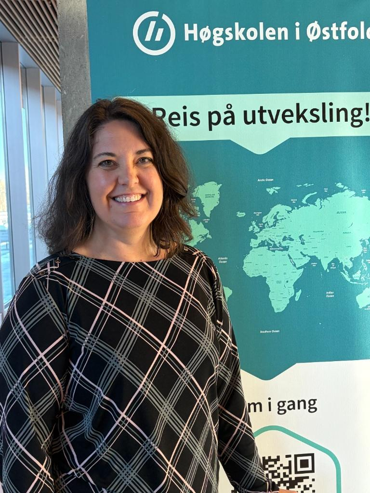
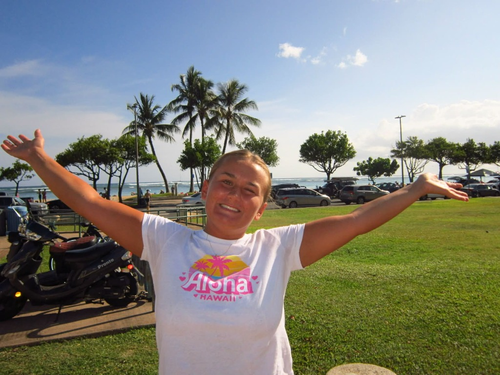

Da Line fikk en e-post om at Hanyang universitet i Sør-Korea hadde inngått avtale med Høgskolen i Østfold, bestemte hun seg nesten på stedet.
Jeg er en litt skeptisk person og liker ikke å gjøre ting jeg ikke er vant til. Derfor bestemte jeg meg for å utfordre meg selv, sier hun.
Valget ble på Sør-Korea blant annet fordi den statlige støtten gjorde at hun slapp å sitte igjen med mye lån. Hun ville også oppleve en helt annen hverdag og kultur.

Prøve noe nytt
Ifølge Rebecca Dawn Smith Norvang ved internasjonalt kontor på Høgskolen i Østfold er det ofte lysten på noe nytt som får studenter til å reise.
Jeg tror det handler mer om spenning enn om faglig utbytte, sier hun.
Høgskolen har nesten 200 samarbeidspartnere i utlandet. Sør-Korea har blitt spesielt populært, men Europa er fortsatt en viktig destinasjon.

Thea har reist til USA to ganger. Først til Michigan på videregående, deretter til Hawaii som student.
Jeg hadde veldig positive erfaringer fra første gang, så jeg hadde lyst til å reise bort en gang til, sier hun.
Hjemlengsel og kultursjokk
Det tøffeste varierer med hvor i prosessen studentene er, forteller Norvang. Før avreise preges mange av usikkerhet. Ved ankomst kommer kultursjokket og hjemlengselen, og mot slutten synes mange det er trist å reise hjem.
For Line kom hjemlengselen etter to måneder.
Jeg tror bare at jeg trives mer i Norge enn jeg hadde sett for meg før jeg dro, sier hun.
Hun syntes koreanerne lignet nordmenn: private og lite pratsomme med fremmede.
Overraskelsen var heller hvor mye hun ble lagt merke til som utlending. Mange snakket lite engelsk, så hun brukte ofte ChatGPT til å oversette når hun handlet.
Thea opplevde Hawaii som dyrt, og hun måtte lære seg hvilke områder hun burde unngå på kveldstid. Skolen var også annerledes: mer undervisning, lekser til hver time og poeng gjennom hele semesteret i stedet for én avsluttende eksamen.

Jeg fant ut at jeg liker måten vi studerer på i Norge bedre, sier hun.
Det som overrasket henne mest, var hvor mye egen kultur Hawaii har, og forholdet folk har til landet de bor på.
Vi lærte at de ser på øyene sine som en del av familien. Det var veldig fint.
Økonomi er ingen stopper
Mange tror utveksling betyr mer studielån, men det er en vanlig misforståelse, ifølge Norvang. Et semester i Spania gir ikke mer lån enn et semester i Halden. I Europa slipper studentene skolepenger og får Erasmus-stipend i tillegg til støtten fra Lånekassen. De som reiser til Sør-Korea, får et ekstra rekrutteringsstipend som dekker nesten alle skolepengene.
Ikke for alle
Både Line og Thea mener utveksling er et individuelt valg. Norvang er enig i at et helt semester ikke passer for alle, men viser til korttidsopphold på én uke for dem som har barn, jobb eller andre forpliktelser.
Hun peker også på kandidatundersøkelser: Å ikke ha vært på utveksling er noe av det tidligere studenter ofte sier at de angrer på.
«Det er ikke så farlig hvor man reiser. Det er bare at man reiser. Man kan ikke ta et feil valg, på en måte.» – Rebecca